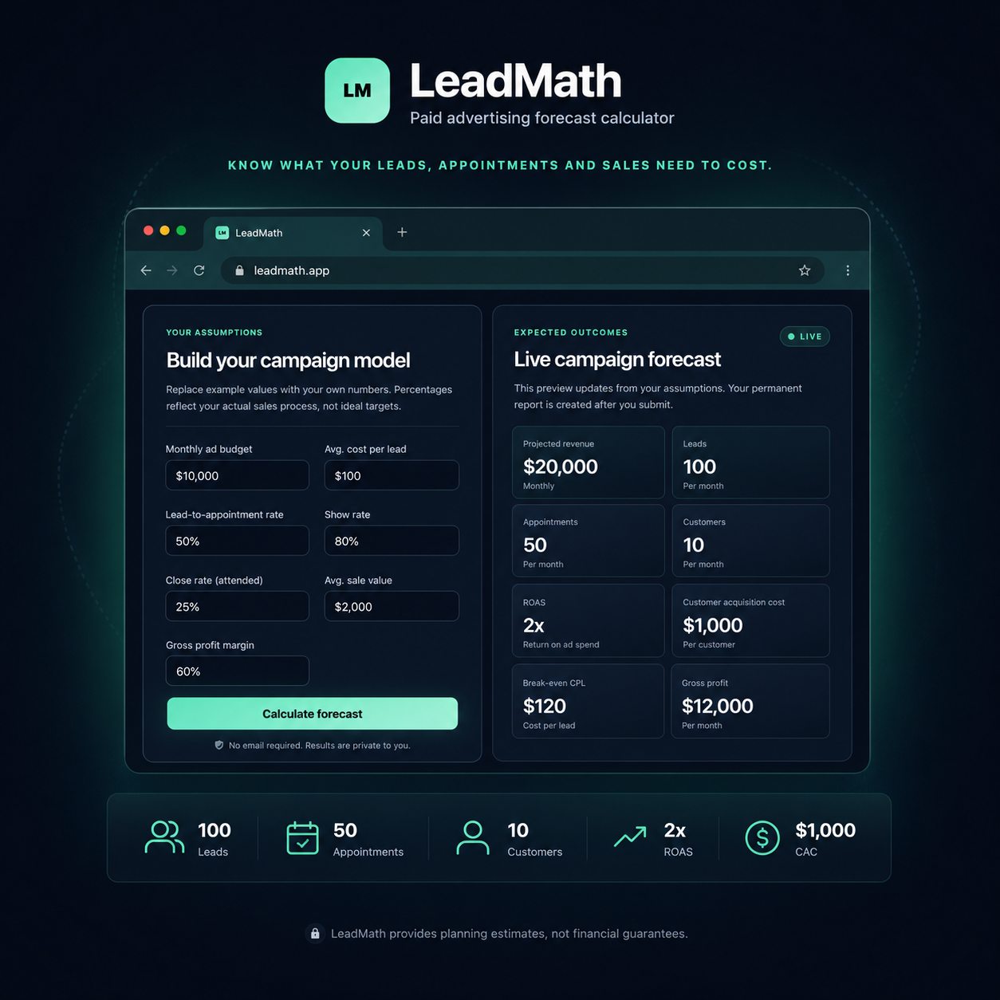

Advertising Budget
Begin with the monthly amount the business plans to invest.
Free Tool · MVP Complete · Deployment Pending
A free paid-advertising forecast calculator that models the complete path from ad spend to leads, appointments, customers, revenue, contribution, customer acquisition cost and return on advertising spend.
The Problem
Cost-per-lead and ROAS alone do not explain whether a campaign can become sustainable. Booking rates, appointment attendance, close rates, average sale value and gross margin all change what a business can afford to spend.
LeadMath connects those assumptions into one transparent forecast so agencies, marketers and businesses can examine the full commercial journey before increasing their advertising budget.

From Budget to Contribution
The model deliberately includes the operational conversion points between a lead and a paying customer. That makes weak assumptions visible and shows where campaign economics improve or break down.
Begin with the monthly amount the business plans to invest.
Convert budget and expected CPL into projected lead volume.
Apply booking and attendance rates instead of assuming every lead converts.
Use the attended-appointment close rate to estimate acquired customers.
Connect customer volume to average sale value and gross margin.
Calculate contribution after ads, CAC, ROAS and break-even limits.
Tests the campaign against cautious conversion assumptions so the downside is visible before spend grows.
Uses the user’s entered assumptions as the primary planning view and the central reference point for the saved report.
Shows how stronger booking, attendance and closing performance can change revenue, contribution and acquisition efficiency.
01 · CUSTOMER JOURNEY
Projects each stage from lead generation through booked appointments, attended appointments and acquired customers.
02 · COMMERCIAL OUTCOME
Applies average sale value and gross margin to distinguish top-line revenue from the value remaining after advertising costs.
03 · ACQUISITION EFFICIENCY
Calculates customer acquisition cost and return on ad spend while keeping both metrics in the context of actual margin.
04 · BREAK-EVEN CONTROL
Surfaces how much the campaign can afford to pay for a lead and how far the expected CPL sits from that break-even boundary.
Customer volume multiplied by average sale value.
Gross profit remaining after campaign spend is deducted.
Advertising spend required for each projected customer.
Projected campaign revenue compared with the ad budget.
The lead-cost ceiling supported by the forecast economics.
The distance between expected CPL and the break-even limit.
A Real Rails Product
LeadMath is not a static form with client-side arithmetic. The application versions its calculation engine, stores immutable snapshots and renders durable public reports without coupling the core product to a particular email or hosting provider.
Centralized calculation logic with explicit model-version tracking.
Saved inputs, scenarios and outputs remain stable after creation.
Non-sequential shareable report URLs avoid predictable record discovery.
Mailer and background-job foundations remain behind a feature flag.
Rate limiting, CSP, browser headers and privacy-focused filtering.
No account, email gate or forced registration stands between the user and the forecast. The product earns trust by being useful first.
A shared report preserves its exact assumptions and results rather than recalculating silently against future code changes.
LeadMath explains assumptions and scenarios as planning guidance—not a guarantee of future campaign performance.
End-to-End Ownership
LeadMath connects my software-development work with more than thirteen years across sales, marketing, advertising and growth. I defined the economic model, product scope, interface, Rails architecture, test strategy and production-hardening work.
Technology
The stack keeps the calculation model and public-report workflow understandable, testable and independent from provider-specific delivery.
Development Practice
The MVP prioritised calculation integrity, saved reports, responsive presentation, public security and production verification before adding accounts, subscriptions or unnecessary platform complexity.
MVP Complete · Deployment Pending
The forecast engine, calculator, saved reports, responsive interface, security work, metadata, error pages and production verification are complete. Public hosting is the remaining release step.
Launch Plan
LeadMath will remain available without an account or email gate. Its planned production home is leadmath.carywood.co once hosting is confirmed.
Rails Development · Product Thinking · Paid Media
Explore the rest of my software and client work, review the tools directory or start a conversation about useful products and growth systems.